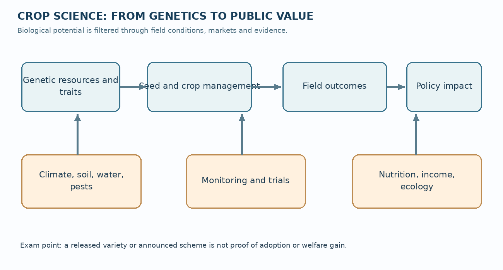
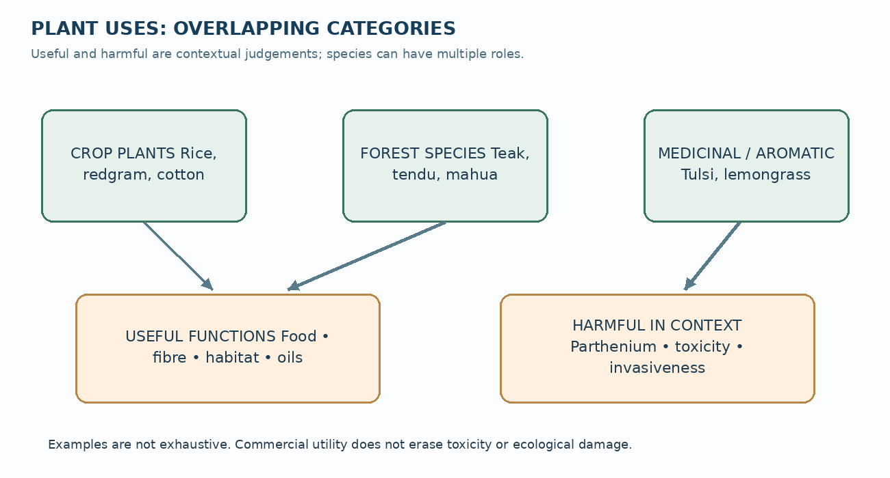
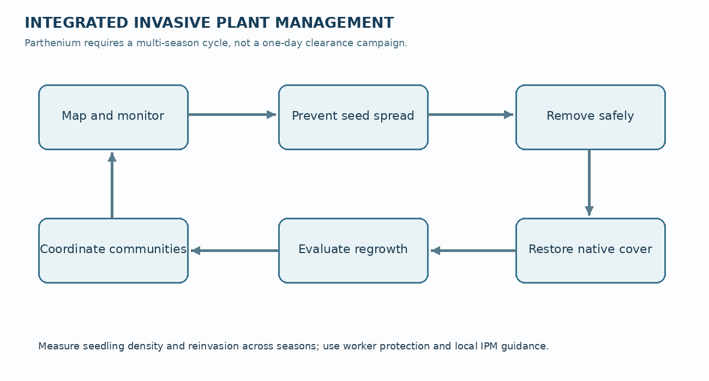

TGPSC Group I · Paper V · Unit II · Topic 1 · English · 24 October 2026 · Published learning draft — NOT academically approved
The original Telangana Public Service Commission Notification No. 02/2024, dated 19 February 2024, Paper V, Unit II, Item 1 states: “Crop Science in India; Characteristics of Plants - Crop plants, Forest species, Medicinal Aromatic plants, Useful and Harmful plants and utility for mankind.” [S01] This line was checked directly against the commission-hosted PDF. It is not a list of official previous-year questions.
| Syllabus requirement | Sections | Core examination distinction |
|---|---|---|
| Crop science in India | 1, 3–7, 14–16 | Yield, resilience, nutrition, economics and environment |
| Characteristics of plants | 2, 5 | Morphology, photosynthesis, reproduction, adaptation and life cycle |
| Crop plants | 3–7 | Cereals, pulses, millets, oilseeds, fibre and industrial crops |
| Forest species | 8–9, 12 | Forest ecology, non-timber products, agroforestry and stewardship |
| Medicinal plants | 10, 15 | Identity, bioactive compounds, evidence, GACP and conservation |
| Aromatic plants | 11 | Volatile oils, distillation, quality, enterprise and safety |
| Useful plants and utility for mankind | 6–12, 16 | Food, nutrition, materials, ecosystem services and livelihoods |
| Harmful plants | 13–14 | Weeds, invasives, toxins, allergens, IPM and biosecurity |
| Telangana and contemporary applications | 3, 4, 6–7, 13–16 | Zonal suitability, PJTSAU, ICAR-IIRR, Parthenium and policy |
Question provenance: The 30 MCQs and six mains questions in this chapter are original practice. None is represented as an official TGPSC PYQ. Source keys [S01]–[S24] refer to a dated source register, without student-facing source page-number references.
Crop science links plant biology to productive and sustainable agriculture. A plant's root system, photosynthetic pathway, reproduction, growth duration and stress responses help determine where and how it can be cultivated. India grows cereals, pulses, millets, oilseeds, fibre and commercial crops across different agro-climatic environments. Crop improvement must combine genetic diversity, breeding, reliable seed, field management, plant protection and market suitability. Telangana's dryland and irrigated regions need different strategies; neither universal rice expansion nor blanket crop substitution is scientifically sound. Forest species provide timber, non-timber products, habitat and ecological regulation; agroforestry can connect farms and trees but cannot replace natural forests. Medicinal and aromatic plants offer specialised value chains requiring botanical identity, traceability, safe extraction, quality testing and sustainable collection. Harmful plants include competitive weeds, invasive aliens, poisonous species and allergens; integrated management is more credible than indiscriminate eradication. Genetic conservation, farmers' rights and evidence-based extension preserve future options. Public programmes should be evaluated by measured adoption, income, nutrition, water use and biodiversity, not only announcements.
| Category | Example | Main use | Key limitation or risk |
|---|---|---|---|
| Cereal | Rice | Staple grain | Irrigation and methane risks depend on system |
| Pulse | Redgram | Protein and diversification | Pod borer, drought and market uncertainty |
| Millet | Sorghum | Food and fodder | Variety-specific pest and price constraints |
| Oilseed | Sesame | Edible oil | Yield and processing variability |
| Fibre | Cotton | Textile lint | Pest pressure and pesticide resistance |
| Forest tree | Teak | Timber | Monoculture not equivalent to native forest |
| Non-timber forest plant | Tendu | Leaf collection income | Overharvest and tenure issues |
| Medicinal plant | Ashwagandha | Specialised raw material | Identity, dose and quality control |
| Aromatic plant | Lemongrass | Essential oil | Distillation costs and chemical specifications |
| Invasive harmful plant | Parthenium | No desired field role | Competition, allergies and seed persistence |
| Poisonous plant | Oleander | Ornamental | Toxic cardiac glycosides |
A strong answer should move from plant mechanism to field practice, then to livelihood and policy consequences. Explain how traits shape suitability, why one intervention works only under certain conditions, and which institutions can implement it. Use Telangana examples with named research stations and dates where verified. Compare productivity with water, nutrition, biodiversity and equity; conclude with measurable recommendations. Do not mistake official policy intentions for observed outcomes, or a registered variety for universal farmer adoption.
Crop science is the systematic study of cultivated plants, their genetic improvement, physiology, cultivation, protection, harvesting and contribution to food, nutrition, industry and livelihoods. It is wider than the production of cereals. A crop can supply grain, fodder, fibre, oil, medicine, timber or an industrial raw material. The crop scientist asks why a plant grows, how a trait is inherited, how soil and climate constrain it, which practices change yield, and how the harvest can be delivered safely and profitably. Agronomy concerns field management; plant breeding concerns inherited improvement; crop physiology explains processes such as photosynthesis and water-use regulation; pathology and entomology investigate disease and insect damage. These disciplines interact rather than operate as separate silos.
Domestication is the multigenerational selection of wild populations for traits useful to people. Larger seeds, reduced seed shattering, synchronised maturity and lower bitterness often improved harvestability, but domestication also narrowed genetic variation. A high-yielding variety can be vulnerable if many farms use similar genetic resistance against an evolving pathogen. India's diversity of rice, millets, pulses, oilseeds, cotton and vegetables is therefore both an economic resource and an insurance policy against future climatic or biological shocks. The examiner should distinguish a species, a variety or cultivar within that species, a hybrid produced by crossing defined parents, and a landrace maintained through farmer selection. An F1 hybrid's uniformity and vigour do not imply that seed saved from it will reproduce the same performance.
The crop system includes seed, water, nutrients, sunlight, pests, labour, mechanisation, markets and policy. Biological yield is all plant biomass; economic yield is the harvested useful fraction. Harvest index is economic yield divided by total above-ground biological yield, subject to a stated definition. Raising harvest index alone cannot compensate for depleted soils, poor seed quality or unreliable markets. A crop that yields more grain per hectare but demands more groundwater per kilogram may be inferior in a water-scarce district. Scientific crop planning therefore evaluates yield, input cost, nutrition, environmental impact, risk and farm income together.
India's Indian Council of Agricultural Research (ICAR), state agricultural universities, Krishi Vigyan Kendras and farmers jointly connect laboratory results to field decisions. ICAR's Crop Science Division page describes genetic-resource management, breeding and plant protection as distinct coordinated programmes [S02]. The existence of a released variety is not proof that every farmer has adopted it. Seed multiplication, location-specific trials, farmer preference and extension determine whether research becomes an actual productivity gain.
A flowering plant usually comprises roots, stems, leaves, reproductive flowers, fruits and seeds. Roots anchor the plant, absorb water and nutrients, and may store reserves; shoots position leaves to capture light and carry water and sugars. Xylem moves water and dissolved mineral nutrients predominantly upward under transpiration-driven tension. Phloem distributes sugars and other assimilates between source organs such as mature leaves and sinks such as developing grains or storage roots. Confusing xylem with phloem obscures why drought and grain filling affect different processes. Stomata regulate gas exchange: opening permits carbon dioxide uptake for photosynthesis but increases water loss. Plants manage this trade-off through stomatal control, root depth, leaf anatomy and growth timing.
Annual plants complete their life cycle in one growing season; biennials usually require two seasons; perennials survive for several years. Rice, wheat and many pulses are managed as annual crops, while mango, teak and neem are perennials. A perennial tree is not automatically a forest species: ecological role depends on landscape, species composition and management. Monocotyledons such as rice and maize generally show parallel leaf venation and fibrous roots; dicotyledons such as pigeonpea and cotton generally show netted venation and a taproot, although real morphology admits exceptions. Flowering, pollination, fertilisation and seed formation are sequential events; self-pollination and cross-pollination influence breeding strategy and seed purity.
Photosynthesis converts light energy into chemical energy. C3 crops such as rice and wheat typically experience greater photorespiration under high temperatures than C4 crops such as maize, sorghum and pearl millet. This is a physiological distinction, not a guarantee that every C4 crop always outyields every C3 crop: water, nutrients, cultivar and season remain decisive. CAM plants open stomata largely at night, a strategy associated with arid adaptation, but CAM is not the same as C4. Photoperiod sensitivity means flowering responds to day length; thermosensitivity means temperature affects development. A cultivar may be excellent in one sowing window but unsuitable in another.
Traits must be measured under realistic environments. Drought escape through early maturity differs from drought tolerance through water conservation or continued metabolism. Disease resistance differs from tolerance: resistance reduces pathogen establishment or multiplication; tolerance limits damage despite infection. Lodging resistance, grain quality, fibre length, oil content, nutrient density and market acceptability are additional plant characteristics. A Telangana agronomist evaluating rice should test not only yield but duration, pest susceptibility, water requirement, milling quality and farmers' ability to sell the grain.
India's monsoon, temperature gradients, soils, irrigation and market networks shape cropping patterns. Kharif crops are generally sown with the southwest monsoon and harvested after the rainy season; rabi crops grow mainly in the cooler post-monsoon season; zaid denotes a shorter summer growing period in many regions. These are agronomic conventions, not immutable labels for a species. Rice may be grown in both kharif and rabi under irrigation, while a rainfed pigeonpea crop may remain in the field across seasons. A crop calendar should identify the local sowing and harvest dates rather than infer them solely from its national classification.
Cereals such as rice, wheat and maize provide carbohydrate-rich staples; millets such as sorghum, pearl millet and finger millet are valued for diverse stress responses and food uses. Pulses including pigeonpea, chickpea, green gram and black gram supply protein and participate in nitrogen fixation through symbiotic rhizobia. Legume nitrogen fixation is conditional on compatible organisms, soil conditions and adequate phosphorus; it does not mean pulses need no nutrient management. Oilseeds include groundnut, sesame, sunflower, mustard and soybean. Fibre crops include cotton and jute; commercial crops include sugarcane, tea, coffee and rubber. Fodder crops support livestock, while medicinal and aromatic crops feed specialised value chains.
Cropping intensity measures gross cropped area divided by net sown area, multiplied by 100. A farm that cultivates two crops on the same hectare within a year has a cropping intensity of 200%, but this does not establish that its water use or profitability is sustainable. Intercropping grows two or more crops together in a planned arrangement; mixed cropping has a less rigid arrangement; rotation sequences crops across seasons. A cereal–pulse rotation may interrupt pest cycles and improve soil management, whereas continuous cultivation of the same host crop can amplify a specialised pathogen. Crop diversification should be assessed through income risk, nutrition, water and ecological resilience rather than number of species alone.
Telangana illustrates the importance of regional suitability. Professor Jayashankar Telangana Agricultural University (PJTSAU) identifies rice, maize, red gram, green gram, sorghum, sesame, castor, cotton, groundnut, soybean and black gram among the state's crops [S05]. Northern, central and southern agro-climatic zones differ in rainfall, soils and cropping opportunities. The Palem research station in semi-arid Nagarkurnool focuses on dryland castor, sorghum, pearl millet, groundnut, redgram and horsegram [S06]. A policy that prescribes water-intensive rice everywhere would ignore these ecological differences and can raise groundwater stress even if procurement supports short-term income.
Seed is a living planting material, not merely a bag of grain. Physical purity refers to the absence of contaminants; genetic purity to maintenance of varietal identity; germination to the fraction of viable seed that produces normal seedlings under test conditions; seed vigour to performance under a range of field stresses. A farmer may purchase genetically pure seed and still experience poor emergence because of storage damage, saline soil, waterlogging or wrong sowing depth. Seed treatment can reduce seed-borne disease risk, but does not replace suitable cultivar selection or safe handling. Breeder seed, foundation seed and certified seed are stages in a controlled multiplication chain, with distinct oversight and standards.
Plant breeding begins by identifying a target population of environments and farmer requirements. Selection from variable populations, controlled crossing, backcrossing, recurrent selection, mutation breeding, marker-assisted selection and genomic methods offer different tools. Backcrossing is useful for transferring a specific trait into a well-adapted parent, but linkage drag can carry undesirable genes. Marker-assisted selection tracks DNA regions associated with a trait; it does not automatically demonstrate field performance. Multi-location and multi-season testing is essential because genotype-by-environment interaction can reverse rankings. Breeding for higher yield should be coupled with resilience, nutrition, input efficiency and quality.
The Protection of Plant Varieties and Farmers' Rights Act, 2001 established a framework recognising both breeders and farmers [S09]. Farmers' rights are not identical to unrestricted commercial sale of branded protected seed; the law contains specific provisions and conditions. Community conservation of landraces matters because these genetic resources may hold drought, salinity or disease-resistance traits absent from narrow commercial lines. The National Gene Fund and benefit-sharing principles address contributions that would otherwise be invisible in formal breeding. A question on intellectual property should examine seed access, research incentives, farmers' seed practices and conservation simultaneously.
PJTSAU's intellectual-property research page records registration details for Telangana Sona (RNR 15048) and other varieties, and its 2025 entries include Telangana rice lines [S07]. A registration entry proves registration, not universal superiority or current district-level adoption. ICAR's 2024–25 annual report includes variety-specific agronomic claims for crops suitable for Telangana, but these are trial or release characteristics, not guaranteed on-farm yield [S03]. Good extension therefore provides location-specific performance ranges, seed-source verification and transparent discussion of trade-offs.
Crop growth can be analysed as capture and conversion of radiation, water and nutrients. Leaf area index is total one-sided leaf area per unit ground area; canopy closure changes interception of sunlight and evaporation from bare soil. More leaves do not always mean more grain: excessive vegetative growth can shade lower leaves, increase lodging and divert assimilates away from reproductive sinks. Source–sink balance becomes critical during grain filling, when stress can reduce seed number or weight. Temperature influences enzymatic activity and developmental rate; an unusually hot flowering period may damage pollen viability even when total seasonal rainfall is adequate.
Water-use efficiency has multiple denominators. Agronomic water productivity may mean harvested kilograms per cubic metre of irrigation water applied, or per cubic metre of evapotranspiration; these figures cannot be compared unless the denominator is stated. Flood irrigation can lose water through runoff and evaporation, while drip systems may improve application efficiency in suitable crops, but drip is not automatically economical for every rice field. Mulching, soil organic matter, appropriate plant spacing, irrigation scheduling and drought-adapted varieties can improve performance. Groundwater depletion is a basin-level issue: one farm's efficient pump can still enable expansion of irrigated acreage, reducing the expected water saving.
Nitrogen is important for proteins and chlorophyll, phosphorus for energy transfer and roots, potassium for osmotic regulation and stress responses. Micronutrients such as zinc and iron are required in smaller amounts but can be critical. Excess nitrogen can promote lush growth and pest vulnerability; fertiliser recommendations should use soil testing and crop-stage requirements rather than fixed universal doses. Integrated nutrient management combines mineral fertilisers, organic matter, crop residues and biological inputs while tracking actual nutrient balances. Organic inputs vary widely in nutrient concentration, so claims of replacing a given quantity of urea require analysis.
A field experiment must separate treatment effects from weather and soil variation through controls, replication and randomisation. A 20% yield increase observed in a single demonstration plot may reflect favourable soil rather than the tested input. Extension advisories should communicate confidence, cost, labour needs and risk. For Telangana's dryland farms, early-season moisture conservation, timely sowing, intercropping and contingency planning can be more valuable than maximising a single-season yield under ideal irrigation.
Rice is a semi-aquatic cereal that tolerates flooded cultivation better than many upland crops, but it is not biologically required to remain continuously submerged throughout growth. Wheat prefers cooler conditions during key stages, while maize uses C4 photosynthesis and is grown for grain, feed and industrial starch. Grain quality includes cooking properties, milling recovery, protein and micronutrient content. The Green Revolution demonstrated the interaction of improved varieties, fertiliser, irrigation, extension and procurement; its benefits were uneven across regions and often accompanied by water and soil pressures. An answer should neither dismiss productivity gains nor ignore long-term resource costs.
Pulses such as pigeonpea and chickpea are vital for dietary protein, soil biological processes and crop diversification. Their yield variability can reflect moisture stress, pod borers, diseases and harvest labour. Intercropping pigeonpea with short-duration cereals or oilseeds can spread risk, but crop competition must be managed through row ratios and timing. Millets such as sorghum and pearl millet offer alternatives in hot and dry environments, yet some cultivars are vulnerable to specific pests, lodging or market constraints. Nutritional value depends on variety, processing and overall diet; no crop is a complete solution to malnutrition.
Biofortification improves the nutrient content of a crop through breeding or other methods; it differs from fortification after harvest. The ICAR–Indian Institute of Rice Research reported a 17 September 2026 Hyderabad awareness and distribution programme featuring zinc-rich DRR Dhan 48 and DRR Dhan 63 in collaboration with a Wanaparthy KVK [S15]. That event demonstrates outreach, not measured population-level reduction in zinc deficiency. Adoption requires seed supply, consumer acceptance, dietary diversity and evaluation of nutrient bioavailability. A nutritional policy that focuses only on tonnes of grain may miss hidden hunger.
Food security has at least four connected dimensions: availability, access, utilisation and stability. A state can have ample rice stocks while households face protein or micronutrient deficits. Crop science contributes through higher and more stable yields, diverse food baskets, safe storage and lower post-harvest losses. Procurement and price support affect what farmers plant; nutrition-sensitive agriculture requires coordination between agriculture, health, schools, women’s groups and markets. A balanced Telangana strategy would support suitable rice areas while testing pulses, oilseeds and millets where rainfall and market conditions justify them.
Oilseeds are grown for edible oils, industrial oils and oilseed cake used in animal feed. Groundnut is a legume whose pods develop underground; sesame is valued for oil quality and drought adaptation; soybean supplies oil and protein-rich meal; sunflower produces oil from its achenes; castor yields industrial oil whose seed cake requires careful handling because of toxic constituents. An oilseed's productivity must be expressed both as seed yield and recoverable oil yield. A variety with high seed yield but low oil percentage may be inferior for a processor. Seed moisture, harvest timing and storage affect quality and aflatoxin risk, especially in groundnut.
Cotton is a fibre crop with seeds surrounded by cellulose-rich lint. Ginning separates lint from seed, and spinning converts fibres into yarn. Fibre length, strength, fineness and uniformity determine textile suitability; yield alone is not the only breeding objective. Insect pests such as pink bollworm and sucking pests can erode farm income, while overuse of broad-spectrum pesticides may damage natural enemies and raise resistance. Integrated pest management combines scouting, appropriate varieties, traps, cultural measures, biological control and threshold-based chemical interventions. The purpose is economic damage prevention, not eradication of every insect.
Sugarcane is a vegetatively propagated C4 crop grown for sucrose, ethanol and biomass; its long duration and water demand must be considered in regional planning. Tobacco, rubber, tea and coffee illustrate the distinction between commercial value and social or ecological consequences. Tobacco's market value does not remove public-health harms; plantation crops can generate export earnings but also raise labour and biodiversity questions. Agro-processing creates value only when raw-material quality, logistics and market access are aligned. A crop selected for high farm-gate price can still fail if processing capacity or assured buyers are absent.
PJTSAU's Mudhole station in Nirmal lists desi cotton, redgram, soybean, chickpea and sesame among mandated crops [S08]. Its Warangal station works on rice, cotton and pulses and reports breeding objectives that include pest resistance and grain quality [S10]. These institutional mandates show why Telangana needs crop-specific research rather than a one-size-fits-all package. Diversifying away from water-intensive monoculture should be coupled with viable oilseed and pulse procurement, extension and risk insurance; otherwise farmers may rationally retain the familiar crop despite ecological costs.
Forest species are plants that form or inhabit forest ecosystems. Trees, shrubs, climbers, herbs, grasses and fungi contribute different functions; a forest is not simply a count of tall trees. Canopy structure moderates microclimate, litter and roots influence soil formation, and vegetation supports food webs, pollination, water regulation and carbon storage. Natural forests typically contain multiple species and age classes, whereas a uniform plantation may have high tree cover but lower habitat complexity. Distinguish forest cover, tree cover outside forests, recorded forest area and legally protected forest: these are different categories with different measurement and governance implications.
In Telangana, teak (Tectona grandis), bamboo, tendu (Diospyros melanoxylon), mahua (Madhuca longifolia), neem (Azadirachta indica) and native dry-deciduous associates illustrate different uses. Teak supplies durable timber; bamboo can supply poles and fibre; tendu leaves are collected as a non-timber forest product; mahua flowers and seeds have food, livelihood and industrial uses. The same species may have commercial and ecological roles. Extraction intensity, regeneration, local tenure and market power determine whether use remains sustainable. A non-timber product is not automatically impact-free: destructive harvesting of bark, roots or immature seeds can damage populations.
Forest management choices include natural regeneration, assisted regeneration, selective harvesting, community stewardship and plantations. Replacing diverse dry-deciduous forest with a fast-growing monoculture may increase short-term wood output but reduce habitat, water or cultural value. Fire is similarly context-dependent: uncontrolled repeated fires can damage regeneration, while ecological effects vary by vegetation type and fire regime. Conservation policy should consider the knowledge and rights of forest-dependent communities and the need to protect wildlife corridors. India's Forest Rights Act, 2006 recognises specified individual and community forest rights, subject to legal processes; it should not be confused with unrestricted conversion of forest land.
A useful evaluation framework asks four questions: which species are present, what services they provide, who benefits and bears costs, and whether harvesting permits recovery. The official India State of Forest Report 2023 should be consulted for dated forest-cover estimates rather than inventing a 2026 Telangana forest statistic. Crop-science knowledge assists nursery quality, agroforestry, seed-source selection and restoration, but forest ecology must remain central when the objective is biodiversity rather than timber volume.
Agroforestry intentionally integrates woody perennials with crops or livestock on the same land management unit. In agrisilviculture, trees and field crops are combined; silvopasture integrates trees and grazing; home gardens mix multiple layers of useful plants. These systems can supply fodder, fuelwood, fruit, timber, shade, soil cover and household income. Tree roots may recycle nutrients from deeper soil, while litter can add organic matter. However, trees can also compete with crops for water, light and nutrients. The net effect depends on species, spacing, pruning, root architecture, rainfall and market demand.
Boundary plantations reduce interference with the main field but may still shade adjacent crops. Alley cropping requires careful orientation and pruning; shelterbelts reduce wind speed and soil erosion but occupy land. Nitrogen-fixing trees do not automatically deliver all their fixed nitrogen to companion crops: biomass turnover, decomposition and soil conditions matter. Introducing exotic fast-growing trees without hydrological assessment can create water competition or invasive risk. Local suitability is therefore more important than a fashionable national list of species.
For a small Telangana farmer, a combination of dryland pulses, fodder grasses and appropriately spaced fruit or multipurpose trees can diversify income. Yet the farmer must wait years for some tree products and may lack reliable timber or fruit markets. Land-tenure security, transit rules, credit and crop insurance shape adoption. Women may benefit from reduced fuelwood collection time, but only if household and community access arrangements are equitable. A project should count labour, water, delayed returns and maintenance—not merely estimated carbon sequestration.
Agroforestry can connect conservation with production when it reduces pressure on natural forests, creates habitat links and buffers income shocks. It cannot replace old-growth forest biodiversity or justify conversion of protected habitats. Compare a teak monoculture, a mixed native tree plantation and a multilayer agroforestry field: each has a different purpose, ecological structure and economic time horizon. A mains answer gains marks by explaining those differences and proposing monitoring of tree survival, crop yield, soil moisture and household benefits over several seasons.
A medicinal plant contains compounds or preparations used in traditional or modern therapeutic systems. The term does not establish that every traditional claim is clinically proven. Plant identity, the part used, extraction method, dose, contaminants, interactions and patient characteristics affect safety. Examples include ashwagandha (Withania somnifera), tulsi (Ocimum tenuiflorum), aloe (Aloe vera), amla (Phyllanthus emblica), senna (Senna alexandrina) and sarpagandha (Rauvolfia serpentina). Scientific names are valuable because common names vary across languages and sometimes refer to multiple species. Some plant-derived compounds are used in modern pharmaceuticals, but purified drug evidence cannot automatically be transferred to crude home preparations.
Medicinal plants may be collected from wild populations or cultivated. Wild harvesting can support livelihoods, yet root or bark removal may kill the source plant and high demand can deplete rare populations. Cultivation can reduce wild pressure when the cultivated material has the required chemical profile and buyers accept it. Good Agricultural and Collection Practices require authenticated planting material, suitable soils, clean water, harvest timing, traceability, appropriate drying and hygienic storage. The National Medicinal Plants Board coordinates conservation, cultivation and trade-related programmes [S11], while ICAR's Directorate of Medicinal and Aromatic Plants Research works on cultivation and quality [S12].
Chemical constituents vary with genotype, environment, season and post-harvest processing. A batch may be correctly labelled yet differ in active-compound concentration. Heavy metals, pesticide residues, microbial contamination and deliberate adulteration create separate quality risks. A responsible value chain uses botanical identification, voucher specimens when appropriate, laboratory tests, documentation and fair procurement. Product regulation depends on whether an item is sold as a medicine, food, cosmetic or raw material; a general claim that all herbal products are harmless is scientifically unsound.
The NMPB's wild-collection guidance emphasises sustainable collection and species conservation [S13]. In June 2025 ICAR-DMAPR reported policy attention to assured markets, planting material and post-harvest management [S14]. Such statements identify priorities, not proof that farmer incomes have risen. In Telangana, medicinal-plant cultivation should be promoted only after checking water requirements, buyer contracts, local species suitability and extension support. A field trial of one medicinal crop cannot justify large-scale substitution for staple food crops without a market and food-security assessment.
Aromatic plants are valued for volatile compounds that produce characteristic scents or flavours. Examples include lemongrass (Cymbopogon citratus), citronella, palmarosa, vetiver, mint, basil and certain Eucalyptus species. Their essential oils may be used in perfumery, cosmetics, flavouring, repellents or industrial formulations. A medicinal plant and an aromatic plant are not mutually exclusive categories: some plants supply both pharmacologically interesting and fragrant compounds. However, essential oils are concentrated chemical mixtures and can cause skin irritation, toxicity or allergic reactions if misused. Natural origin does not guarantee safety.
Steam distillation is common for volatile oils: steam carries volatile constituents from plant material, the vapour is condensed, and oil is separated from water. Hydrodistillation places material in water; solvent extraction may recover less volatile constituents but requires careful residue management. Oil yield is affected by plant species, cultivar, harvest stage, drying, chopping, distillation duration and equipment efficiency. A high biomass yield does not necessarily give high essential-oil yield or the desired chemical profile. Buyers may specify constituents such as citral in lemongrass or citronellal in citronella, so quality analysis matters.
Value addition has several stages: cultivation, harvesting, drying, distillation, grading, packaging, branding and sale. A farmer-owned distillation unit can reduce transport of bulky fresh leaves, but only if feedstock supply, fuel, water, skilled operation and market contracts justify the capital cost. Cooperative models can pool production and testing costs, though governance and transparent pricing remain essential. Residual biomass may be composted where safe; spent material should not be assumed harmless without considering pesticide residues or contamination.
In September 2026 ICAR-DMAPR reported training on cultivation and value addition of medicinal and aromatic plants [S16]. A June 2026 ICAR release described a patented botanical-based insect-repellent formulation using essential oils [S17]. A patent establishes a legal claim to an invention, not independent proof of superior field effectiveness or absence of all health risks. For an examination answer, connect plant physiology and extraction chemistry to employment opportunities, standards, fair marketing and environmental safeguards rather than presenting aromatic plants merely as a list of names.
The utility of plants extends far beyond food. Photosynthesis supports terrestrial food webs and removes carbon dioxide from the atmosphere while releasing oxygen as a by-product. Roots bind soil, riparian vegetation reduces bank erosion, and tree canopies can moderate local heat. Flowers and nectar sustain pollinators, while leaves and litter contribute to soil organisms. Plants also supply timber, bamboo, fibres, dyes, resins, latex, paper pulp, gums, medicines, fuelwood and ceremonial materials. A single species may provide several services, but using one service intensively can diminish others.
The economic concept of ecosystem services groups benefits into provisioning, regulating, cultural and supporting or habitat-related functions. Provisioning services are tangible products such as fruits and wood; regulating services include erosion control and microclimate moderation; cultural services include sacred groves and landscape identity. Supporting processes such as soil formation and nutrient cycling underpin other benefits and should not simply be added to provisioning values without checking for double counting. Pollination illustrates interdependence: some crops depend heavily on animal pollinators, whereas rice and wheat are predominantly self- or wind-pollinated. Claims that all crop production would disappear without bees exaggerate the biological facts.
Native species can be valuable in urban Telangana for shade, birds and water infiltration. However, planting trees under power lines, over drains or on unsuitable road medians can create maintenance hazards. A species should be selected for crown size, root behaviour, water demand, drought tolerance and local biodiversity rather than rapid growth alone. Sacred groves and community-managed trees can conserve genetic resources, but governance and access rights affect whether conservation benefits are equitable.
The value of a plant is also contextual. Prosopis juliflora may provide fuelwood in some settings yet spread aggressively and displace native vegetation elsewhere. Eucalyptus may provide pulpwood on suitable farms but can create water and biodiversity concerns under particular management. An invasive plant may have a commercial use without ceasing to be ecologically harmful. Public policy should avoid the simplistic labels 'good plant' and 'bad plant' and instead evaluate species behaviour, landscape effects, community dependence and realistic management alternatives.
A weed is a plant growing where it is unwanted; the term describes a management relationship rather than a permanent taxonomic category. A volunteer crop plant can become a weed in the following season. Invasive alien species are non-native organisms that establish and spread, often causing ecological or economic harm. Not every non-native ornamental plant is invasive, and not every troublesome weed is alien. Distinguishing these categories prevents inappropriate blanket eradication policies. Weeds compete with crops for light, nutrients, water and space, may host pests, obstruct irrigation or contaminate harvested seed.
Parthenium hysterophorus, commonly called congress grass, is a particularly important Telangana example. It invades disturbed land and fields, competes with crops and may trigger dermatitis or respiratory allergies in susceptible people. ICAR-CRIDA's Ranga Reddy KVK reported Parthenium awareness and removal activities in August 2026 [S18]. The 2026 ICAR Directorate of Weed Research outreach stressed sustained integrated management and public participation [S19]. Removing plants before seed set reduces future seed rain, but the persistent seed bank means a one-time campaign cannot eradicate established populations. Biological control requires evidence of host specificity and ecological monitoring.
Poisonous plants include species with toxic alkaloids, glycosides, proteins or other constituents. Castor seeds contain ricin, while oleander and yellow oleander contain cardiac glycosides; these are not safe for casual medicinal experimentation. Some plants cause phototoxic reactions or allergic contact dermatitis without being poisonous when touched by everyone. Toxicity depends on species, plant part, dose, route and susceptibility. Agricultural and public-health advisories should use reliable botanical identification and warn against confusing edible lookalikes with toxic species.
Integrated weed management combines crop rotation, competitive crop cover, mulching, hand or mechanical removal, biological control and carefully selected herbicides where legally permitted. Herbicide-resistant weeds can evolve under repeated use of the same mode of action; prevention involves rotating tactics, not merely increasing dose. Removing invasives near streams or roads requires worker protection, safe disposal and restoration of desirable vegetation, or the bare ground may be reinvaded. A mains answer should propose surveillance, prevention, early response and long-term restoration, not only 'spray pesticide'.
Plant health threats include fungi, bacteria, viruses, nematodes, insects, mites, rodents, weeds and abiotic disorders. A yellow leaf is a symptom, not a diagnosis: nutrient deficiency, waterlogging, salinity, viral infection and insect feeding may look similar. Correct management begins with field history, distribution of symptoms, affected plant parts, weather, laboratory tests where needed and economic thresholds. The disease triangle states that disease depends on a susceptible host, a virulent pathogen and a conducive environment; time is often added in practice. Altering any one component can reduce disease, but pathogen evolution and changing weather complicate control.
Integrated pest management (IPM) prioritises prevention, monitoring and compatible controls. Resistant cultivars, crop sanitation, adjusted sowing dates, natural enemies, pheromone traps and biological agents can reduce pesticide dependence. Chemical pesticides may be needed when expected damage justifies cost and risk, but should be applied at registered doses with protective measures and pre-harvest intervals. A pest's presence is not equivalent to an economically damaging infestation. ICAR's 22 September 2026 explanation of IPM emphasises monitoring and judicious pesticide use [S20]. The objective is to manage losses and protect health, not to eliminate all organisms from a field.
Plant quarantine attempts to prevent the introduction or spread of harmful pests through seeds, seedlings, cuttings and traded commodities. Seed certification and quarantine solve different problems: a seed lot may be genetically pure but carry a quarantine pest. Surveillance, diagnostic capacity, rapid reporting and farmer training matter because global trade and climate change alter pest ranges. A new pest report should distinguish detection, establishment and proven regional spread. Importing a natural enemy for biological control also requires quarantine and non-target risk assessment.
Farmers face production, price and policy risks simultaneously. A costly pesticide schedule may lower a measured pest count but reduce net income if the pest was below the economic threshold. Conversely, delayed response to a rapidly spreading pest can cause severe losses. An evidence-based advisory compares expected yield saved, treatment costs, worker safety, resistance risks and effects on pollinators. Telangana extension programmes should use local surveillance, weather forecasts and farmer feedback; national advisories require local validation before widespread adoption.
Plant genetic resources include cultivated varieties, farmer landraces, crop wild relatives, breeding lines and related genetic material. Diversity within a species supplies alleles that breeders may need for disease resistance, salinity tolerance, grain quality or altered maturity. Diversity among species helps farms cope with different rainfall and market conditions. Genetic erosion occurs when local varieties or wild populations disappear; it can be irreversible even if national grain production increases. Conservation therefore combines in-situ protection of species in their habitats and on-farm maintenance with ex-situ seed banks, field gene banks and tissue or cryogenic collections.
Seed banks are useful for orthodox seeds that tolerate drying and low-temperature storage; recalcitrant seeds from some trees cannot be stored by the same method and may need living collections or specialised conservation. A banked accession is not automatically a ready-to-release cultivar. It must be characterised, evaluated, regenerated and made available through appropriate rules. Community seed banks may maintain locally adapted varieties and cultural knowledge, but require viability testing and transparent ownership. Gene conservation also needs protection of pollinators, soil organisms and habitats that support plant reproduction.
The Protection of Plant Varieties and Farmers' Rights Authority implements the 2001 Act's registration and rights framework [S09]. Its October 2026 gazette list includes newly notified crop species for registration; notification of a species for registration is not the same as release of a high-yielding variety [S21]. India's Biological Diversity Act, 2002 and 2023 amendment govern aspects of access, use and benefit sharing, with the amendment brought into force on 1 April 2024 [S22]. The National Biodiversity Authority and state biodiversity boards have distinct roles. A student should not collapse PPV&FR variety rights, seed certification, biodiversity access rules and forest rights into a single law.
Conservation policy faces genuine tensions: breeders need access to germplasm; communities seek recognition and benefit sharing; companies seek predictable intellectual-property protection; ecosystems need safeguards against overcollection. A sound framework documents prior informed processes where applicable, records provenance, protects community knowledge, enables research and distributes benefits fairly. In Telangana, conserving drought-adapted millets and pulses can serve future breeding even where current markets favour irrigated rice. The economic value of such diversity often becomes visible only after a new pest or climatic shock emerges.
Case A — irrigated rice versus dryland diversification. Consider a mandal with assured canal water in some villages and declining groundwater in others. A uniform rice expansion target would ignore opportunity costs. First map soil depth, water availability, electricity reliability, procurement, labour and markets. In irrigated pockets, improved rice with appropriate irrigation scheduling may remain rational. In dryland pockets, redgram, sorghum, sesame or groundnut may reduce exposure to water failure, but only with seed access, processing and market support. The objective is not to declare rice 'bad'; it is to align crops with local constraints and farmer welfare. PJTSAU's zonal and station mandates provide a basis for testing options [S05–S08].
Case B — zinc-rich rice and nutrition. A KVK distributes biofortified seed. The scientific question is whether the released variety expresses the desired nutrient trait under local conditions; the extension question is whether farmers can produce and sell it; the public-health question is whether consumers actually receive enough bioavailable zinc. Each stage requires separate evidence. ICAR-IIRR's September 2026 event is a verified demonstration of outreach, not a nutritional-impact trial [S15]. A mains answer should combine varietal improvement with dietary diversity and health monitoring.
Case C — medicinal-plant enterprise. A women's collective proposes lemongrass cultivation and a shared distillation unit. Assess water needs, harvest frequency, oil percentage, fuel costs, laboratory testing, buyer specifications, price volatility and land tenure. If an essential-oil buyer withdraws, the crop cannot be converted into staple food at will. Start with a small contract-backed pilot and record actual net margins. The project becomes a development intervention only when its benefits, safety and ecological costs are measured rather than announced.
Case D — Parthenium management. A municipality clears invasive weeds from a roadside once and calls the problem solved. The seed bank, neighbouring infested fields and exposed soil make recurrence likely. Combine early removal before flowering, safe handling, competitive native vegetation, biological-control assessment, seasonal monitoring and community awareness. ICAR's August 2026 Hyderabad outreach illustrates the need for local participation [S18]. Eradication claims require longitudinal evidence, not photographs of a single clean-up.
Case E — forest restoration and livelihoods. A district proposes planting one fast-growing tree species over a degraded landscape. Before procurement, survey native vegetation, soil, grazing use, wildlife movement, water demand and community rights. Natural regeneration or mixed native species may provide better ecological outcomes than monoculture. Measure survival after several summers, species richness and household access to non-timber products. A plantation target counted as saplings planted is not the same as a restored forest.
Worked application — comparing two crops. Suppose one hectare of rice yields 5,000 kg and uses 8,000 cubic metres of irrigation water, while a pulse yields 1,400 kg and uses 2,000 cubic metres. Their simple irrigation-water productivities are 0.625 and 0.70 kg/m³ respectively. These figures cannot rank welfare directly because prices, protein content, rainfall, labour and groundwater recharge differ. A second calculation should compare net returns per cubic metre and risk, not only kilograms. A rigorous district recommendation uses multi-year field data and includes environmental externalities.
Future agenda. India needs stress-resilient seed systems, diverse farming landscapes, plant-health surveillance, traceable medicinal-plant supply chains, safe essential-oil processing and fair access to genetic resources. ICAR, PJTSAU, NMPB, PPV&FRA, forest departments, KVKs, local bodies and farmer organisations have complementary roles. Public investment should reward credible adoption and measured outcomes rather than publicity around variety releases or plantation drives. Crop science becomes development policy when it translates plant biology into nutrition, resilient incomes, biodiversity and prudent resource use.



Diagram 1 — Crop science decision system: germplasm, plant traits and farm conditions flow through management to yield, nutrition, income and environmental outcomes; monitoring feeds back to the next season.
Diagram 2 — Plant-use classification: crop plants, forest species, medicinal/aromatic plants, and harmful plants overlap in function; ecological impact depends on context rather than permanent moral labels.
Diagram 3 — Integrated invasive-plant management: surveillance, early removal, safe handling, restoration and repeated monitoring form a cycle; a one-off clearing action is not eradication.
All three diagrams were created for this chapter and are included in the offline HTML and complete PDF.
A. The naming of all wild plants only
B. The study of cultivated plants, improvement, management, protection and use
C. Only the chemistry of synthetic fertilisers
D. Only the sale of agricultural commodities
Answer: B. Explanation: Crop science connects plant genetics, physiology, agronomy, plant protection, post-harvest quality and livelihoods. Taxonomy and markets contribute, but neither alone constitutes crop science. The question tests the syllabus's broad treatment of crop plants rather than a narrow focus on grain production.
A. A genetically identical F1 hybrid supplied annually
B. A locally maintained crop population shaped by farmer selection
C. A species that can grow only in forests
D. A seed lot that has failed germination tests
Answer: B. Explanation: Landraces often contain useful variation adapted to local conditions. They can provide traits for breeding, but are not automatically higher yielding than improved cultivars. An F1 hybrid is produced by crossing defined parents; its saved progeny may segregate, unlike a true-breeding line.
A. Xylem
B. Phloem
C. Epidermis
D. Cork
Answer: B. Explanation: Phloem transports photosynthates between source and sink tissues. Xylem mainly transports water and mineral nutrients. This distinction explains why stress during grain filling can reduce harvest even if roots absorbed adequate minerals earlier in the season.
A. Rice — C4 crop
B. Maize — C4 crop
C. Sorghum — CAM crop
D. Wheat — CAM crop
Answer: B. Explanation: Maize and sorghum use C4 photosynthesis, whereas rice and wheat are C3 crops. C4 physiology often improves performance under high temperature and light, but no pathway guarantees yield independently of water, cultivar and nutrients. CAM is a distinct water-conserving strategy.
A. Completing a vulnerable stage before severe stress
B. Never requiring water
C. Permanent closure of all stomata
D. Elimination of all root growth
Answer: A. Explanation: Early maturity can allow flowering or grain filling before seasonal drought becomes severe. Drought tolerance refers to physiological or structural capacity to withstand stress. Both strategies can be useful, but each has yield and seasonal trade-offs.
A. Net sown area divided by gross cropped area × 100
B. Gross cropped area divided by net sown area × 100
C. Total grain output divided by fertiliser
D. Irrigated area divided by forest cover
Answer: B. Explanation: Repeated cropping of the same land raises gross cropped area relative to net sown area. A value above 100% indicates more than one crop cycle on at least some land, not necessarily efficient or sustainable water use. The denominator must be stated.
A. Redgram and sorghum grown in alternate rows simultaneously
B. Rice followed by chickpea on the same field in successive seasons
C. Cotton and pigeonpea grown together
D. Two maize cultivars grown in the same season
Answer: B. Explanation: Rotation is a temporal sequence, whereas intercropping is simultaneous cultivation in a planned spatial arrangement. Rotations can interrupt host-specific pests and alter nutrient demands, but benefits depend on the sequence and local management.
A. Every pulse fixes unlimited nitrogen without microbes
B. Compatible rhizobia can fix atmospheric nitrogen under suitable conditions
C. Pulses require no phosphorus
D. Nitrogen fixation occurs only in grain after harvest
Answer: B. Explanation: Symbiotic rhizobia inhabit nodules in suitable legumes and convert atmospheric nitrogen into usable forms. Inoculant compatibility, soil conditions and nutrient availability influence fixation. The process does not make legumes universally fertiliser-free.
A. Freedom from all field pests for the crop's lifetime
B. Maintenance of the declared variety's identity
C. Guaranteed high germination in waterlogged soil
D. Maximum seed size
Answer: B. Explanation: Genetic purity is distinct from physical purity, germination and vigour. A genetically correct seed lot may perform poorly if stored badly or sown under unsuitable conditions. Seed-quality evaluation uses multiple tests, not one label.
A. Visible packaging colours
B. DNA markers linked to desired traits
C. Only soil pH measurements
D. Farmer age records
Answer: B. Explanation: DNA markers help breeders track alleles or genomic regions associated with traits. They can improve selection efficiency, but multi-location field evaluation remains necessary because marker association is not identical to proven yield or stability.
A. Only companies can contribute to varietal improvement
B. Farmers' conservation contributions and breeders' innovation both merit recognition
C. All protected seed may be sold under the breeder's brand without restrictions
D. Plant varieties cannot be registered
Answer: B. Explanation: India's 2001 law seeks to balance breeders' and farmers' rights and encourage conservation. It contains specific rights and restrictions; an answer claiming unrestricted branded commercial seed sales would misrepresent the framework.
A. Economic yield with total biological yield
B. Fertiliser price with irrigation cost
C. Rainfall with groundwater level
D. Seed germination with genetic purity
Answer: A. Explanation: Harvest index captures allocation of biomass to the useful harvested part, usually grain in cereals. It is a ratio with a defined biomass basis, not a universal measure of profitability or resource sustainability.
A. 0.08 kg/m³
B. 0.8 kg/m³
C. 8 kg/m³
D. 80 kg/m³
Answer: B. Explanation: Divide 4,800 by 6,000 to obtain 0.8 kg per cubic metre. This metric does not include rainfall or evapotranspiration unless defined to do so. Comparing crops also requires prices, costs, nutrition and risk.
A. Removes all micronutrients from grain
B. Improves nutrient content through the crop's genetic or biological production pathway
C. Adds micronutrients only after milling
D. Guarantees elimination of malnutrition
Answer: B. Explanation: Biofortified varieties express desired nutrient traits as grown. Their impact still depends on yield, consumption, processing, nutrient bioavailability and dietary context. An awareness programme is not itself evidence of improved population health.
A. A press photograph of seed distribution
B. A controlled assessment of adoption, consumption and nutritional outcomes
C. A single variety-registration entry
D. The weight of posters distributed
Answer: B. Explanation: Seed distribution measures outreach; adoption and consumption establish exposure; measured nutritional outcomes address impact. This is a general distinction between activity, output and outcome, applicable to many government programmes.
A. Only the colour of the plant stem
B. Fibre length and strength along with yield
C. Number of cereal grains per panicle
D. Ability to form rice tillers
Answer: B. Explanation: Cotton lint quality influences spinning and textile value. Fibre length, strength, fineness and uniformity matter alongside yield, pest resistance and production costs. Crop-specific end use determines the breeding objective.
A. Both necessarily have identical species composition
B. A plantation's tree cover does not automatically replicate a natural forest's biodiversity
C. All plantations are legally protected forests
D. Natural forests contain no grasses or shrubs
Answer: B. Explanation: Natural forests contain complex habitats, regeneration processes and species interactions. A monoculture plantation may provide wood and canopy cover but fewer ecological functions. Forest cover, recorded forest area and plantation area should not be conflated.
A. A non-timber forest product
B. A fossil fuel
C. A synthetic fibre
D. A marine resource
Answer: A. Explanation: Tendu leaves are collected from forest trees and used commercially without harvesting timber. Their collection can provide livelihoods, but sustainability depends on harvest intensity, regeneration, tenure and equitable marketing.
A. Silvopasture
B. Hydroponics
C. Monoculture rice
D. Pure aquaculture
Answer: A. Explanation: Silvopasture combines woody perennials with pasture or livestock. Agrisilviculture combines trees and field crops. Neither arrangement is automatically beneficial; species, water competition and stocking rates determine results.
A. Natural extracts cannot be toxic
B. Correct identity, dose, processing and contaminants influence safety
C. All traditional claims have identical clinical evidence
D. Wild root harvesting never affects population survival
Answer: B. Explanation: Plant chemistry varies by species, part, growth conditions and preparation. Contamination and interactions can create risks. Traditional use may justify investigation but does not replace controlled evidence for efficacy and safety.
A. They eliminate the need for species identification
B. They improve traceability, quality and sustainability of supply
C. They permit unrestricted harvesting of threatened plants
D. They guarantee a fixed market price
Answer: B. Explanation: Authentic planting material, clean handling, documented collection and suitable drying help manage contamination and quality variation. Sustainable wild collection also protects regeneration. Market risk remains separate from agronomic quality.
A. Essential oil
B. Cotton lint
C. Cereal starch
D. Mineral fertiliser
Answer: A. Explanation: Steam carries volatile compounds from aromatic plant material; condensation and separation recover oil. Oil quantity and composition depend on plant variety, harvest timing and processing conditions. A patent for an oil-based product does not by itself establish field efficacy.
A. Sale of timber logs
B. Reduced soil erosion through vegetation cover
C. Harvested grain in a warehouse
D. Extracted essential oil
Answer: B. Explanation: Soil retention is a regulating service. Timber, grain and oil are provisioning products. A complete appraisal should recognise ecological services without double counting underlying processes as independent final benefits.
A. Every weed is an alien invasive
B. A weed is unwanted in a setting; an invasive alien establishes and spreads outside its native range with harmful effects
C. Every alien ornamental plant is invasive
D. Invasive plants cannot have economic uses
Answer: B. Explanation: Weed status depends on management context, while biological invasion has ecological and biogeographic meaning. An alien species may be harmless, and a native plant can behave as a weed in a crop field.
A. Its seeds can persist and nearby sources can reinvade
B. It never produces seeds
C. It is a cereal crop
D. It can only grow underwater
Answer: A. Explanation: A persistent seed bank and recurring seed dispersal demand sustained management. Preventing seed set, restoring competitive vegetation, safe handling and monitoring are more credible than declaring success after one clean-up drive.
A. Castor
B. Rice
C. Pearl millet
D. Wheat
Answer: A. Explanation: Castor seeds contain ricin and must not be treated as edible. Castor oil is processed for industrial and other regulated uses, but the plant's commercial value does not eliminate seed toxicity. Identification and safe handling matter.
A. Host, pathogen and conducive environment
B. Seed price, transport and retail margin
C. Forest cover, road density and rainfall alone
D. Only pesticides and irrigation
Answer: A. Explanation: Disease requires a susceptible host, a capable pathogen and favourable environmental conditions, with time often considered. Integrated management can modify host resistance, inoculum and field conditions instead of relying on one chemical.
A. On a fixed daily schedule regardless of pest presence
B. When justified by monitoring, thresholds and compatible measures
C. Only after destroying all natural enemies
D. Without regard to registered dose or worker safety
Answer: B. Explanation: IPM combines prevention, monitoring, resistant varieties, biological and cultural controls, and need-based chemicals. The aim is to keep losses below economically damaging levels while reducing health and ecological risks.
A. Automatically a released commercial variety
B. Conserved genetic material that may require evaluation before breeding use
C. A record of fertiliser subsidies only
D. Proof that a species is invasive
Answer: B. Explanation: Germplasm collections preserve genetic options, but characterisation, regeneration and field evaluation are needed before breeding or release. Some tree species require field gene banks or specialised methods rather than ordinary dry-seed storage.
A. Notification of crop species for registration proves all farmers adopted new varieties
B. It identifies species eligible for the registration framework, not crop adoption or yield results
C. It automatically certifies all seed lots
D. It abolishes farmers' rights
Answer: B. Explanation: Administrative notification, varietal registration, seed certification and on-farm adoption are distinct events. The October 2026 list includes species such as Niger, summer squash, rubber and mahua; it is not a production survey.
Each complete model answer uses explicit introduction, analytical subheadings, Telangana/policy application and conclusion. These blueprints supplement, not replace, the complete answers.
Introduction. Crop science integrates genetics, physiology, agronomy and plant protection to improve cultivated plants and the systems that deliver food. Its purpose is not simply record grain production but dependable nutrition, farm livelihoods and ecological sustainability.
Productivity and stability. Breeding for yield, early maturity, disease resistance and tolerance to drought or heat can reduce production risk. Quality seed, balanced nutrients, soil management and integrated pest management convert genetic potential into field performance. Multi-location trials matter because the best cultivar in an irrigated research station may fail under dryland conditions.
Nutrition and diversity. Pulses provide dietary protein, while millets and diverse vegetables widen food choices. Biofortification can raise micronutrient content within a crop; however, seed distribution is only an output, not proof of improved health. Dietary diversity, affordability and nutrient bioavailability remain necessary. ICAR-IIRR's September 2026 zinc-rich rice outreach in Telangana illustrates this distinction.
Climate and resource stewardship. Crop diversification, moisture conservation, appropriate rotations and water-efficient practices can reduce vulnerability. Uniform expansion of water-intensive crops may increase groundwater stress. Seed banks and farmer landraces preserve genetic options for future breeding.
Telangana application. PJTSAU's zonal research can match rice, redgram, sorghum, sesame and groundnut to local soils, rainfall and markets. Extension must include seed access, prices and farmer preferences.
Conclusion. Successful crop science should be judged by stable, nutritious and profitable harvests per unit of scarce resource, not yield announcements alone.
Background. Crop plants are deliberately cultivated for food, fibre, fodder or industrial products. Forest species form part of ecosystems supplying timber, non-timber products, habitat and ecological regulation. Agroforestry deliberately combines trees with crops or livestock on managed land.
Crop systems. Annual cereals, pulses and oilseeds allow relatively rapid harvest and mechanisation. Their productivity depends on seed, water, nutrients and protection. Continuous monoculture can amplify pests and resource depletion, whereas rotations and diversification may spread risk.
Forest ecosystems. Native trees, shrubs, grasses and climbers support soil processes, wildlife, pollinators and microclimate regulation. Teak, bamboo, tendu and mahua have livelihood uses. Yet extraction must respect regeneration and forest-dependent communities. A uniform timber plantation cannot be treated as ecologically equivalent to diverse natural forest.
Agroforestry. Boundary trees, shelterbelts, agrisilviculture and silvopasture may diversify income, reduce erosion and supply fuelwood. Trees can also compete for water and light, delay returns and require market access. Design should match local rainfall, species and land tenure.
Telangana relevance. Dryland farmers could combine pulses with appropriately spaced multipurpose trees, while forest restoration should prioritise native composition, survival and community rights. Policies should distinguish planted saplings from established, functioning ecosystems.
Conclusion. These land uses are complementary but not interchangeable. Evaluation must include farm income, biodiversity, water balance, regeneration and equitable access, rather than treating maximum tree or crop count as the sole objective.
Introduction. Medicinal plants provide raw material for therapeutic systems and research; aromatic plants yield volatile compounds used in fragrances, flavours and industrial products. Some species serve both functions. Their cultivation can diversify farm income, but profitability and safety cannot be assumed.
Production and processing. Scientific identification, suitable planting material, soil and water management, harvest stage and drying determine quality. Essential oils from lemongrass or citronella may be recovered by steam distillation. Processing can add local value, although equipment, fuel, testing and buyer specifications increase costs.
Quality and safety. Active constituents vary across genotype, environment and storage. Adulteration, pesticide residues, heavy metals and microbial contamination create risks. A traditional use claim is not equivalent to clinical evidence; natural oils can irritate skin or cause toxicity. Good Agricultural and Collection Practices, traceability and testing are essential.
Conservation. Destructive wild collection of roots or bark can deplete rare populations. Cultivation and sustainable harvest protocols can reduce pressure, provided markets accept the cultivated material. The National Medicinal Plants Board and ICAR-DMAPR contribute to research, conservation and farmer training.
Telangana proposal. Begin with small pilots linked to assured buyers, extension, shared distillation where economical and transparent contracts for women's collectives. Monitor net returns, water use and product quality rather than announcing acreage alone.
Conclusion. Medicinal and aromatic plants offer real opportunities when evidence-based production, conservation, standards and fair marketing operate together. Unverified health claims and speculative monoculture can turn an opportunity into financial or ecological harm.
Introduction. A weed is a plant unwanted in a particular location; an invasive alien species spreads beyond its native range and causes harm. These categories overlap but are not identical. Some useful commercial plants can also become ecologically damaging when introduced or poorly managed.
Problem. Parthenium hysterophorus competes with crops and native vegetation and may trigger dermatitis and respiratory allergies. It spreads through disturbed land, transport corridors and a persistent seed bank. Poisonous plants such as castor and oleander create different risks through toxic compounds, requiring correct identification and public awareness.
Integrated response. Map infestation hotspots and prioritise schools, grazing areas, irrigation channels and field margins. Remove young plants before flowering using appropriate worker protection; prevent contaminated soil or seed movement. Encourage competitive native cover and assess host-specific biological control under scientific oversight. Use registered herbicides only where justified and follow safety requirements.
Governance and evidence. ICAR-CRIDA's Ranga Reddy outreach in August 2026 illustrates local engagement. Municipalities, agriculture officers, schools and farmer groups should coordinate. Track seedling density, reinvasion, worker exposure and control costs across seasons. One day's roadside clearing is not evidence of eradication.
Trade-offs. Mechanical clearing can disturb soil, indiscriminate herbicide use can damage non-target plants, and poorly tested biological control may introduce new risks. Methods must be combined and adapted to the site.
Conclusion. Prevention, early response, safe removal, restoration and repeated monitoring are more effective than publicity-driven one-time campaigns. Telangana needs a durable, evidence-based invasive-plant management programme.
Background. Crop improvement relies on genetic variation in cultivars, landraces and wild relatives. Breeding converts useful variation into varieties with better yield, resilience, nutrition or quality. Yet genetic uniformity can increase vulnerability to emerging pests and climatic shocks.
Breeding pathway. Scientists identify target traits, cross or select plants, evaluate progeny and conduct multi-location trials. Marker-assisted methods can accelerate selection but do not replace field evidence. Seed multiplication and germination testing then determine whether the released variety reaches farmers in usable form.
Farmers' contributions. Communities have conserved and selected landraces over generations. The Protection of Plant Varieties and Farmers' Rights Act, 2001 recognises both innovation and farmers' roles. Breeders need incentives, while farmers need fair seed access and recognition of genetic-resource contributions. The law's specific provisions should not be simplified into unrestricted commercial resale of branded protected seed.
Conservation. In-situ and on-farm systems maintain evolving populations; ex-situ seed and field gene banks preserve accessions. Some species cannot be conserved through ordinary dry-seed storage. Conservation requires documentation, viability testing and safeguards for traditional knowledge.
Telangana application. Local millet, pulse and rice diversity can help future breeding for drought and heat. PJTSAU registrations demonstrate formal varietal work, but registration alone does not establish adoption or superiority.
Conclusion. A resilient seed system combines public research, farmers' knowledge, transparent testing, rights protection and conservation. Its success lies in accessible, locally suitable planting material and preserved options for future generations.
Problem definition. A water-stressed district may rely heavily on irrigated rice because procurement, familiarity and infrastructure reduce market risk. Advising farmers simply to switch crops ignores income uncertainty, soils, labour, storage and demand. The aim is to improve resilience without imposing avoidable losses.
Diagnosis. Map aquifer trends, canal reliability, soil depth, rainfall variability, crop costs, electricity use and household nutrition. Separate genuinely irrigated zones from dryland farms. Measure net returns per hectare and per cubic metre of water, with consistent denominators and multiple years of data.
Crop options. In suitable dryland areas, test redgram, sorghum, pearl millet, sesame, groundnut or chickpea through replicated demonstrations. Combine crop rotations, soil-moisture conservation, integrated nutrient management and IPM. Avoid assuming that every alternative is profitable merely because it needs less irrigation.
Institutions and incentives. PJTSAU, KVKs and farmer organisations should select locally adapted varieties and supply reliable seed. Processing, storage, procurement or contracts must precede large-scale acreage targets. Credit, insurance and transition support can reduce first-year risk. Include women farmers and tenant cultivators in consultation.
Monitoring. Record yield stability, water withdrawals, input costs, market prices, soil condition and farmer retention over several seasons. Use the results to modify recommendations. Where rice remains competitive and water is available, improve irrigation scheduling rather than enforcing an arbitrary ban.
Conclusion. Diversification succeeds when scientific suitability and credible markets align. A district plan should reward stable incomes and groundwater stewardship, not the number of hectares officially announced as converted.
No official TGPSC previous-year question is reproduced or claimed in this topic. Original MCQs and mains questions are explicitly labelled as original practice. An official PYQ can be added only after independently locating the original commission-issued paper, confirming the exact question and its number, and preserving a source record.
These are institutional or statutory sources consulted as of 24 October 2026. Publication dates are supplied where shown by the issuing institution. A release, policy, training event or variety-registration entry does not by itself prove adoption, effectiveness or later impact. Source keys in the student notes identify the underlying claim; no student-facing page-number citations are used.
| Key | Issuer and date | Claim supported and important limitation | Official source |
|---|---|---|---|
| S01 | Telangana Public Service Commission, Notification 02/2024, 19 February 2024 | Exact Paper V Unit II Topic 1 syllabus wording; not PYQ provenance | https://websitenew.tgpsc.gov.in/preview/RElSRUNUUkVDUlVJVE1FTlROT1RJL05PVElGSUNBVElPTl9OT18wMi0yMDI0X0dyb3VwLUlfU2VydmljZXMgKDEpMjAyNDAyMjAxNDA3MzcucGRmr95v17a0y2d8i13v |
| S02 | ICAR Crop Science Division, institutional overview, accessed 24 October 2026 | Crop breeding, genetic resources, protection and research network; webpage statistics may be updated | https://www.icar.gov.in/index.php/en/crop-science/crop-science |
| S03 | ICAR Annual Report 2024–25, published 2025 | Released crop varieties and Telangana-relevant trial attributes; not guaranteed farm yields | https://icar.org.in/sites/default/files/2025-10/ICAR%20Eng%20Annual%20Report_2024-25.pdf |
| S04 | ICAR–IIRR variety release dashboard, accessed 24 October 2026 | Telangana-associated rice varieties and year entries; release/notification not equal to adoption | https://icar-iirr.org/variety-dashboard/ |
| S05 | PJTSAU, Crops of Telangana, accessed 24 October 2026 | State crop examples and broad zones; dynamic acreage text not used as a 2026 estimate | https://pjtau.edu.in/crops-of-telangana/ |
| S06 | PJTSAU, Regional Agricultural Research Station Palem, accessed 24 October 2026 | Dryland crop research mandate at Nagarkurnool; not statewide yield data | https://pjtau.edu.in/regional-agricultural-research-station-palem/ |
| S07 | PJTSAU, IPR Research Wing, accessed 24 October 2026 | Telangana Sona and other varietal registrations; registration does not establish field adoption | https://pjtau.edu.in/ipr-research-wing/ |
| S08 | PJTSAU, Agricultural Research Station Mudhole, accessed 24 October 2026 | Desi cotton, redgram, soybean, chickpea and sesame mandates in Nirmal | https://pjtau.edu.in/agricultural-research-station-mudhole/ |
| S09 | PPV&FR Authority, About Us and 2001 Act, accessed 24 October 2026 | Framework for farmers' and breeders' rights; consult statute for specific legal entitlements | https://plantauthority.gov.in/about-us |
| S10 | PJTSAU, Regional Agricultural Research Station Warangal, accessed 24 October 2026 | Rice, cotton and pulse breeding goals; objectives not proof of realised outcomes | https://pjtau.edu.in/regional-agricultural-research-station-warangal/ |
| S11 | National Medicinal Plants Board, official portal, accessed 24 October 2026 | Conservation, cultivation, trade coordination and medicinal-plant context | https://www.nmpb.nic.in/ |
| S12 | ICAR, list of directorates, accessed 24 October 2026 | Institutional role of Directorate of Medicinal and Aromatic Plants Research, Anand | https://icar.gov.in/en/project-directorate |
| S13 | NMPB, Good Field Collection Practices booklet, institutional guidance | Sustainable wild collection and botanical authentication; guidance not a guarantee of compliance | https://nmpb.nic.in/sites/default/files/publications/Good_Field_Collection_Practicies_GFCPs_Booklet-Part-I.pdf |
| S14 | ICAR-DMAPR, 21 June 2025 | Research priorities, assured markets, planting material and post-harvest management for medicinal plants | https://icar.gov.in/index.php/en/union-agriculture-minister-shri-shivraj-singh-chouhan-reviews-research-progress-icar-dmapr-anand |
| S15 | ICAR-IIRR, 17 September 2026 | Zinc-rich DRR Dhan 48/63 outreach in Hyderabad/Wanaparthy; not nutrition-outcome evidence | https://icar.gov.in/en/awareness-and-distribution-programme-biofortified-zinc-rich-rice-organised-icar-iirr-hyderabad |
| S16 | ICAR-DMAPR, 18 September 2026 | Cultivation/value-addition training; no measured farmer-income effect asserted | https://icar.gov.in/hi/node/26452 |
| S17 | ICAR-DMAPR, 2026 patent announcement, accessed 24 October 2026 | Botanical essential-oil repellent invention; patent not independent clinical efficacy proof | https://www.icar.gov.in/en/icar-dmapr-anand-gujarat-gets-patent-innovative-herbal-mosquito-and-housefly-repellent-technology |
| S18 | ICAR-CRIDA KVK Ranga Reddy, 22 August 2026 | Local Parthenium awareness and management activity; not eradication evidence | https://www.icar.gov.in/en/icar-crida-hyderabad-kvk-organized-21st-parthenium-awarness-week-2026 |
| S19 | ICAR-Directorate of Weed Research, 20–21 August 2026 | Integrated Parthenium management and public outreach; outcomes need long-term follow-up | https://icar.gov.in/en/icar-dwr-jabalpur-expands-parthenium-outreach-through-nationwide-training-and-student-engagement |
| S20 | ICAR, 22 September 2026 | Principles of integrated pest management and judicious pesticide use | https://icar.gov.in/en/integrated-pest-management-sustainable-approach-responsible-pest-management |
| S21 | PPV&FR Authority, gazette notifications, 14 October 2026 | Four crop species notified for registration, not new variety adoption or yields | https://plantauthority.gov.in/gazette |
| S22 | Ministry of Environment, Forest and Climate Change, notification 18 January 2024 | Biological Diversity (Amendment) Act, 2023 commencement on 1 April 2024 | https://upload.indiacode.nic.in/showfile?actid=AC_CEN_16_18_000010_200318_1517807327125&filename=notification_bd_act%2C_2023.pdf&type=notification |
| S23 | ICAR, 30 June 2026 | Farmer training on balanced fertiliser and medicinal-plant cultivation; an activity record | https://icar.gov.in/en/icar-dmapr-anand-gujarat-organises-farmers-training-balanced-use-fertilizers-and-promotion |
| S24 | ICAR, 22–24 April 2026 | Horticultural biosecurity risks and integrated mitigation; conference, not a quantitative crop-loss estimate | https://icar.gov.in/en/icar-cpcri-kasargod-organises-national-seminar-biosecurity-risks-convened-kayamkulam |